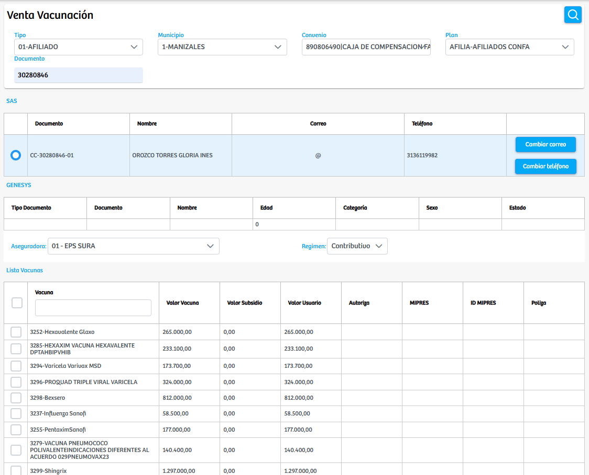
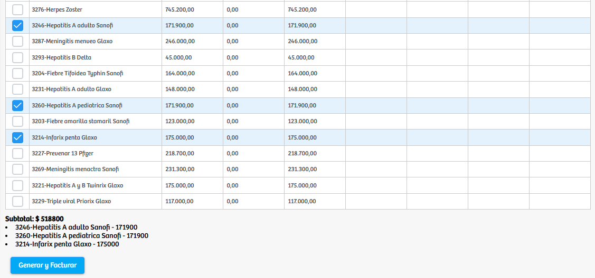
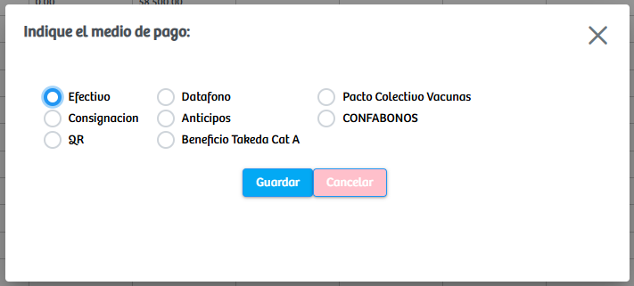

Modulos Sas-Web
Funcionalidades
Venta Vacunacion
El módulo Venta Vacunación permite realizar de manera ágil y controlada el proceso de venta de vacunas a los usuarios. Inicialmente, el sistema solicita seleccionar el tipo de paciente al cual se le realizará la venta, lo que define las reglas y parámetros aplicables según su condición. Posteriormente, se debe elegir el municipio donde se está efectuando la atención, así como el convenio al que pertenece el usuario y finalmente el plan asociado. Estos datos permiten validar correctamente la afiliación del usuario y garantizar que la venta se procese bajo las condiciones correctas.
Una vez diligenciados estos filtros, se ingresa el documento de identidad del paciente para buscarlo en el sistema. Al cargar los resultados, se selecciona el registro correspondiente, lo que habilita automáticamente la sección donde se muestra la lista completa de vacunas disponibles para la venta. En esta tabla se detalla el valor de la vacuna, subsidios aplicables, valor final para el usuario y otros datos relevantes. El usuario deberá marcar las vacunas que desea adquirir y verificar el subtotal generado.
Cuando la selección está completa, se oprime el botón Generar y Facturar, ubicado en la parte inferior de la pantalla. Al hacerlo, el sistema desplegará un modal solicitando elegir el medio de pago, entre opciones como efectivo, datáfono, consignación, anticipos, QR, pactos colectivos o beneficios especiales. Después de seleccionar el método de pago correspondiente, se confirma la operación y el sistema procede a generar la factura, finalizando así la venta.
